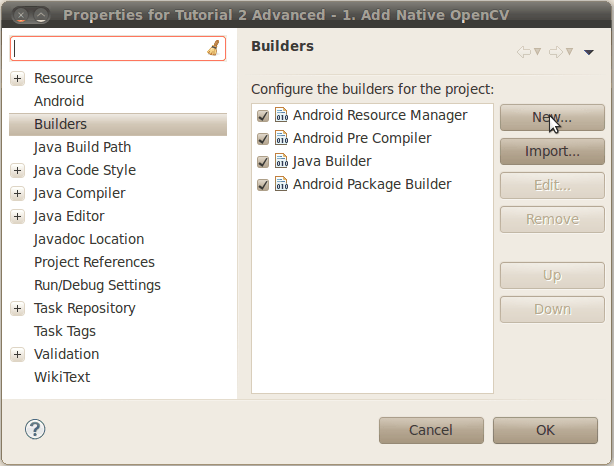
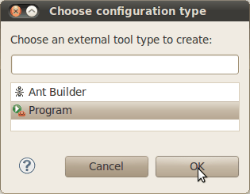
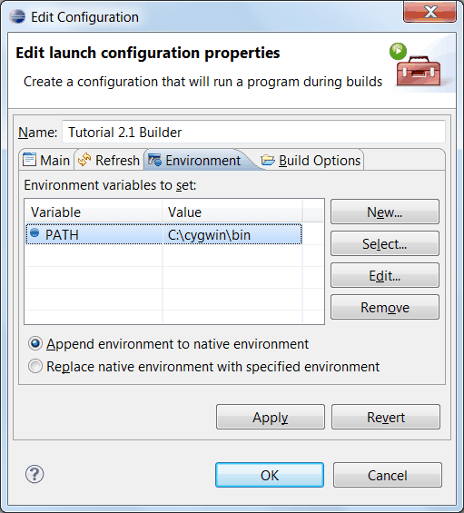
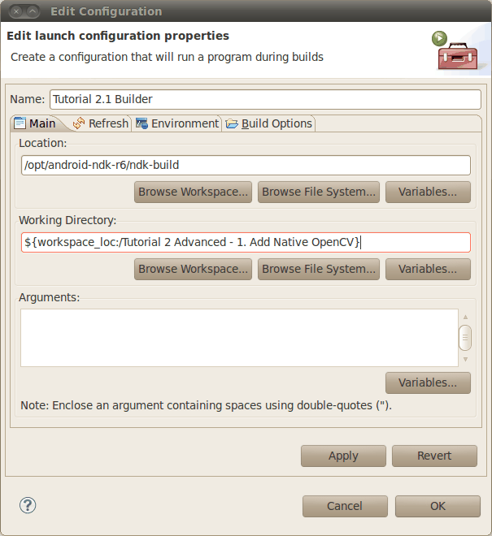
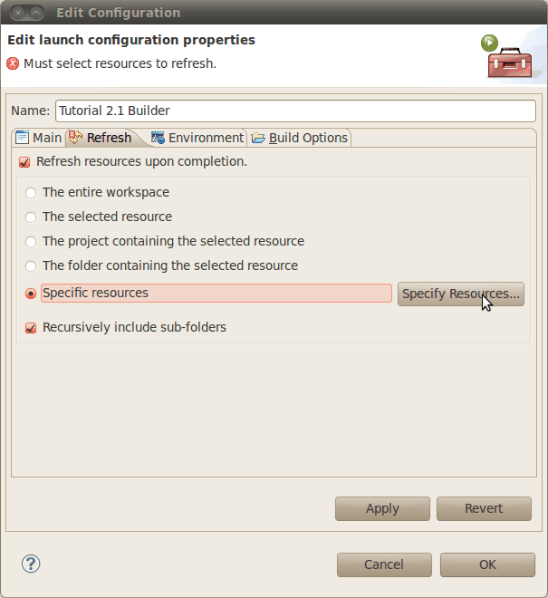
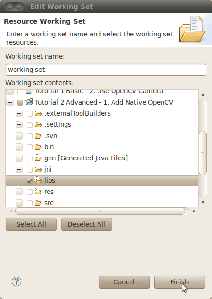
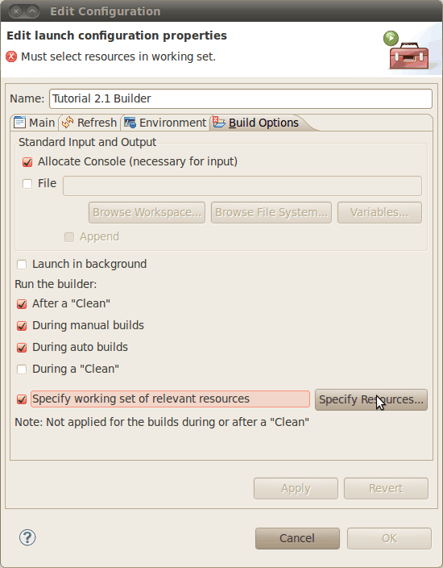
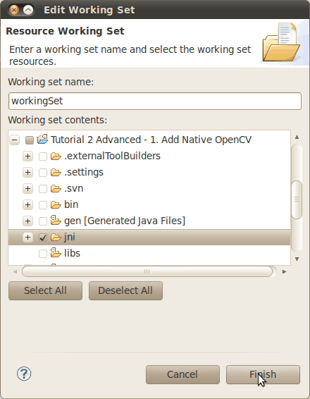
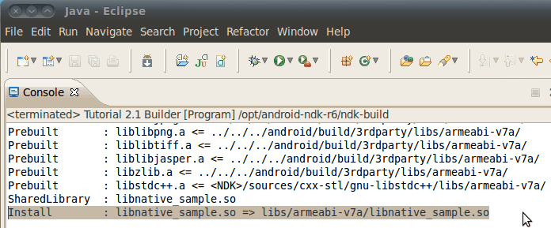

Using C++ OpenCV code with Android binary package¶
The Android way is writing all your code in Java. But somethimes it is not enough and you need to go to a native level and write part of your application in C/C++. This is important when you already have some computer vision functionality which is written in C++ and uses OpenCV, and you want to use it in your Android application, but do not want to rewrite the C++ code to Java. In this case the only way is to use JNI mechanism. It means, that you should add a class with native methods wrapping your C++ functionality into the Java part of your Android application.
This tutorial describes a fast way how to create and build Android applications containing OpenCV code written in C++. It shows how to build an application which uses OpenCV inside its JNI calls.
Please note that before starting this tutorial you should fulfill all the steps, described in the tutorial Using Android binary package with Eclipse.
This tutorial was tested using Ubuntu 10.04 and Windows 7 SP1 operating systems. Nevertheless, it should also work on Mac OS X. If you encounter errors after following the steps described here, feel free to contact us via android-opencv discussion group https://groups.google.com/group/android-opencv/ and we will try to help you.
Prerequisites: Setup NDK¶
To compile C++ code for Android platform you need Android Native Development Kit (NDK).
You can get the latest version of NDK from the page http://developer.android.com/sdk/ndk/index.html .
To install Android NDK just extract the archive to some folder on your computer. (Here is installation instructions on the NDK home page: http://developer.android.com/sdk/ndk/index.html#installing)
Note
Before start you can read official Android NDK documentation which is in the Android NDK archive, in the folder docs/.
The main article about using Android NDK build system you can read in the file ANDROID-MK.html.
Also some additional useful information you can read in the files APPLICATION-MK.html, NDK-BUILD.html, and in the files CPU-ARM-NEON.html, CPLUSPLUS-SUPPORT.html, PREBUILTS.html.
Theory: Android application structure¶
Usually code of an Android application has the following structure:
- root folder of the project/
- jni/
- libs/
- res/
- src/
- AndroidManifest.xml
- default.properties
- ... other files ...
where
the src folder contains Java code of the application,
the res folder contains resources of the application (images, xml files describing UI layout , etc),
the libs folder will contain native libraries after successful build,
and the jni folder contains C/C++ application source code and NDK’s build scripts Android.mk and Application.mk.
These scripts control the C++ build process (they are written in Makefile language).
Also the root folder should contain the following files
AndroidManifest.xml file presents essential information about application to the Android system (name of the Application, name of main application’s package, components of the application, required permissions, etc)
It can be created using Eclipse wizard or android tool from Android SDK
default.properties is a text file containing information about target Android platform and other build details.
This file is generated by Eclipse or can be created with android tool from Android SDK
Note
Both files (AndroidManifest.xml and default.properties) are required to compile the C++ part of the application (NDK build system uses information from these files). If any of these files does not exist, compile the Java part of the project before the C++ part.
Theory: How to build Android application having C++ native part (from command line)¶
Here is the standard way to compile C++ part of an Android application:
Open console and go to the root folder of Android application
cd <root folder of the project>/Note
Alternatively you can go to the folder jni of Android project but samples from OpenCV binary package are configured for building from project root level (because of relative path to the OpenCV library).
Run the following command
<path_where_NDK_is_placed>/ndk-build
Note
If you are working in cygwin shell and encounter an error saying that NDK does not find some cygwin‘s path then you might need to define the following environment variable:
export NDK_USE_CYGPATH=1
After executing this command the C++ part of the source code is compiled.
After that the Java part of the application can be (re)compiled (using either Eclipse or ant build tool).
Note
Some parameters can be set for the ndk-build:
Example 1: Verbose compilation
<path_where_NDK_is_placed>/ndk-build V=1
Example 2: Rebuild all
<path_where_NDK_is_placed>/ndk-build -B
Theory: How to build Android application having C++ native part (from Eclipse)¶
There are several possible ways to integrate compilation of C++ code by Android NDK into Eclipse compilation process. We recommend the approach taken from this site: http://mobilepearls.com/labs/ndk-builder-in-eclipse/
Important
This instructions should be applied for each Android project in Eclipse workspace. So if you have 3 projects having C++ part then you need to configure 3 builders.
Below is an adapted version of this guide:
Navigate to Package Explorer window and expand your project having JNI resources.
If you can not see libs folder under this project then you need to create it manually. (It will be required on step 7, but you need to create it before you open project properties.)
Right click on your project in Package Explorer window and select Properties.
In the Properties dialog select Builders menu and press the New... button:
In the resulting dialog select the Program type and press OK button:
In the Main tab fill the following fields:
Name - any name for your builder. (“Tutorial 2.1 Builder” in my case.)
Note
This name has to be unique for each project in your workspace.
Location - full path to ndk-build tool.
UNIX
Just put full path to ndk-build into this filed. Also you can add some options to the Arguments:guilabel: fied, for example -B option.
Cygwin
Instead of path to the ndk-build tool you need to put full path to cygwin‘s bash.exe location. E.g: C:\cygwin\bin\bash.exe.
Put full path to ndk-build into the Arguments field E.g. C:\Android\android-ndk-r6\ndk-build.
Go to the Environment tab and define an environment variable:
- PATH - full path to the cygwin tools. E.g. C:\cygwin\bin
- Working Directory - put path to your project into this field. Instead of hardcoding full path you can click Browse Workspace... button and select your project.
Go to the Refresh tab and select both Refresh resources upon completion and Recursively include sub-folders.
Next set the Specific resources option and click Specify resources... button:
Select libs folder under your project and click Finish:
Go to the last tab Build options. Make sure that all checkboxes are set as shown on the next screen:
Next, click the Specify resources... button.
Select jni folder of your project and click the Finish button:
Finally press OK in the builder configuration and project properties dialogs. If you have automatic build turned on then console showing build log should appear:

Theory: The structure of Android.mk and Application.mk scripts¶
The script Android.mk usually have the following structure:
LOCAL_PATH := $(call my-dir)
include $(CLEAR_VARS)
LOCAL_MODULE := <module_name>
LOCAL_SRC_FILES := <list of .c and .cpp project files>
<some variable name> := <some variable value>
...
<some variable name> := <some variable value>
include $(BUILD_SHARED_LIBRARY)
This is the minimal file Android.mk, which builds a C++ source code of an Android application. Note that the first two lines and the last line are mandatory for any Android.mk.
Usually the file Application.mk is optional, but in case of project using OpenCV, when STL and exceptions are used in C++, it also should be written. Example of the file Application.mk:
APP_STL := gnustl_static
APP_CPPFLAGS := -frtti -fexceptions
APP_ABI := armeabi-v7a
Practice: Build samples from OpenCV binary package¶
OpenCV binary package includes two samples having JNI resources:
Tutorial 2 Advanced - 1. Add Native OpenCV
This sample illustrate how you can use OpenCV in C++ but without OpenCV Java API.
Tutorial 2 Advanced - 2. Mix Java+Native OpenCV
This sample shows how you can mix OpenCV Java API and native C++ code.
To build these samples you need to:
- Fulfill all the steps, described in the tutorial Using Android binary package with Eclipse.
- Setup one builder for “Tutorial 2 Advanced - 1. Add Native OpenCV” project (as described in Theory: How to build Android application having C++ native part (from Eclipse))
- Setup second builder for “Tutorial 2 Advanced - 2. Mix Java+Native OpenCV” project (repeat the steps from Theory: How to build Android application having C++ native part (from Eclipse))
- Clean these projects (in the main Eclipse menu: Project ‣ Clean...)
- Run Eclipse build command (if option Build Automatically is not set)
Practice: Create an Android application, which uses OpenCV¶
To build your own Android application, which uses OpenCV from native part, the following steps should be done:
The archive with OpenCV binary package should be downloaded and extracted to some folder (as example, into the home folder)
We recommend to use an environment variable to specify the location of OpenCV package. Full or relative path hardcoded in jni/Android.mk will also work.
So, the environment variable OPENCV_PACKAGE_DIR should be defined. The value of the variable should points to the folder, where the OpenCV package has been extracted.
As an example, on UNIX you can add add the following line into the hidden file .bashrc placed in your home folder:
export OPENCV_PACKAGE_DIR = <path to the extracted OpenCV package>
Then relogin (or better reboot your computer).
Attention
without rebooting (or logout) this change might not work.
If you are a Windows user, then navigate to:
Windows 7 / Windows Vista
My Computer (Right Click on Icon) ‣ Properties (Link) ‣ Advanced System Settings (Link) ‣ Advanced (Tab) ‣ Environment Variables (Button) ‣ System variables (Section)
Windows XP
My Computer (Right Click on Icon) ‣ Properties (Link) ‣ Advanced (Tab) ‣ Environment Variables (Button) ‣ System variables (Section)
Create new variable OPENCV_PACKAGE_DIR and similarly to UNIX relogin or reboot.
If you are setting NDK builder as described above in Theory: How to build Android application having C++ native part (from Eclipse), then you can define this variable in builder settings. It can be done on third Environment tab of the builder configuration window (we have already added some variables to this tab on Windows but skipped it for other platforms).
The file jni/Android.mk should be written for the current application using the common rules for the file.
For detailed information see the Android NDK documentation from the Android NDK archive, in the file <path_where_NDK_is_placed>/docs/ANDROID-MK.html
The line
include $(OPENCV_PACKAGE_DIR)/share/OpenCV/OpenCV.mkshould be inserted into the jni/Android.mk file right after the line
include $(CLEAR_VARS)Note
If your application utilize both native (C++) OpenCV and its Java API you need to put the following line before including OpenCV.mk to avoid conflict between C++ and Java builders:
OPENCV_CAMERA_MODULES:=off
The file Application.mk should exist and should contain lines
APP_STL := gnustl_static APP_CPPFLAGS := -frtti -fexceptions
Also the line
APP_ABI := armeabi-v7a
is recommended for the applications targeting modern ARMs
To build the C++ code the Android NDK script ndk-build should be run in the root directory of application. Then the C++ source code using OpenCV will be built by Android NDK build system. After that the Java part of the application can be rebuild and the application can be installed on an Android device.
Note that this step requires calling the ndk-build script from the console. Instead of this step you can use integration of Android NDK into Eclipse as stated above in the section Theory: How to build Android application having C++ native part (from Eclipse) .
Additional C++ support in Eclipse¶
Note that you can install additional C++ plugins in Eclipse:
- Open Help / Install New Software. This shows the Install dialog.
- In the Work with drop-down list choose Helios - http://download.eclipse.org/releases/helios (or Indigo - http://download.eclipse.org/releases/indigo depending on your Eclipse version) and wait while the list of available software is loaded.
- From the list of available software select Programming Languages ‣ C/C++ Development Tools.
- Click Next, click Next again, accept the agreement, and click the Finish button.
- When installation is finished, click Reload
Help and Feedback
You did not find what you were looking for?- Ask a question in the user group/mailing list.
- If you think something is missing or wrong in the documentation, please file a bug report.

Table Of Contents
- Using C++ OpenCV code with Android binary package
- Prerequisites: Setup NDK
- Theory: Android application structure
- Theory: How to build Android application having C++ native part (from command line)
- Theory: How to build Android application having C++ native part (from Eclipse)
- Theory: The structure of Android.mk and Application.mk scripts
- Practice: Build samples from OpenCV binary package
- Practice: Create an Android application, which uses OpenCV
- Additional C++ support in Eclipse
Previous topic
Using Android binary package with Eclipse